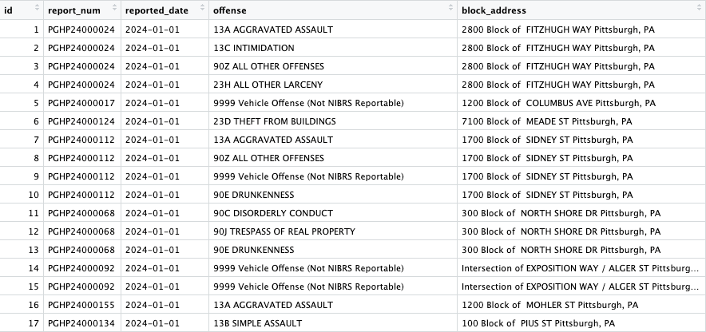
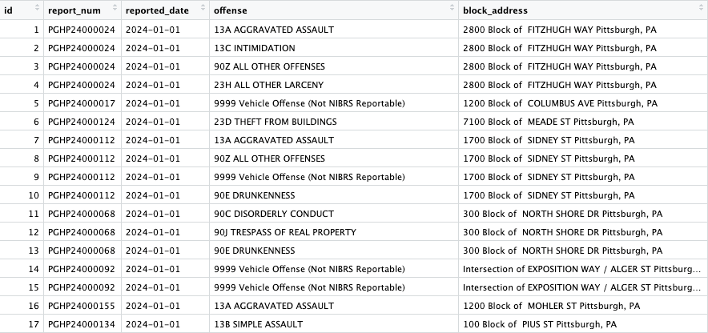
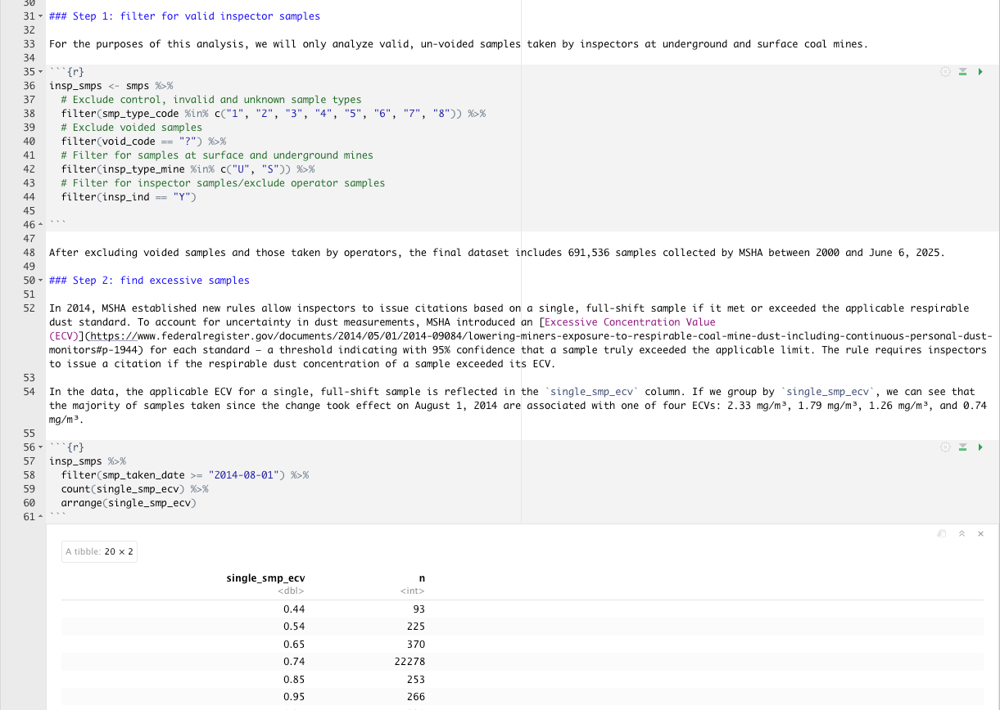
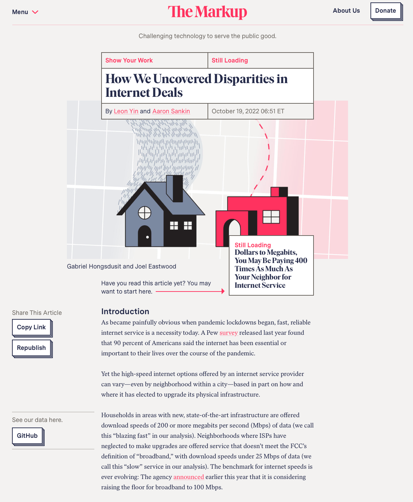

Public records and data
Public records and data: A key resource
- Public records and data underpin much of our work.
- They provide an empirical backdrop to anecdotal and on-the-ground reporting.
- They can confirm and quality what we’re hearing from sources.
- Internal correspondence can provide behind-the-scenes insights.
- Data can provide broader context allowing us to find trends, patterns, and outliers over time and place.
- Record and data are kept by the government but they belong to the people.
Types of public records
Unstructured data
- Contracts, invoice, receipts — anything documenting a financial transaction.
- Emails, texts, letters and other correspondences.
- Memos, policy manuals, program guides — internal documents that help agencies function.
Structured data
- Anything collected in a systemic way, usually to inform decision-making (e.g. student test scores, arrests)
- Metadata to unstructured data (e.g. sender, recipient, subject of an email)
Requesting records
How to get the records you need
- Ask (seriously, just ask)
- National and state public record laws — FOIA and Pennsylvania’s Right-to-Know Law. Other states have their own versions.
- FOIA reading rooms.
- Google dorking
- Data repositories
Formulating a request
- Think like the person who has to find the records. How would you search for them?
- Be specific — keywords for searches, date range, email domains, individual names.
- Talk through the request with the agency that will have to find the. Tell them what you want, and sometimes they will help you use the right language to get it.
- Protect your confidential sources. If a request is too specific, it could lead back to them.
- Look at other public record requests. See what has worked and what hasn’t for requests that are similar to yours. You can find prior requests at the Pennsylvania Office of Open Records, Muckrock and Government Attic. (Pro tip: You can also FOIA FOIAs).
- Talk to a lawyer - Pennsylvania NewsMedia Association, Reporters Committee for Freedom of the Press.
Working with data
Gaslit
Comparing satellite data to regulatory reports, the Howard Center at ASU found that the fossil fuel industry flared natural gas at volumes higher than what was disclosed to state regulators.
Pittsburgh’s portfolio of abandoned homes
A Post-Gazette analysis of property assessment records and building code violations found that Pittsburgh owns thousands of broken down and abandoned homes that have incurred scores of repeat violations, costing taxpayers millions of dollars and contributing to urban blight.

Girls’ high school sports participation
The Minnesota Tribuna analyzed sports data from the Federation of State High School Associations to find the state leads the country in girls’ high school participation. For every 100 Minnesota high school girls, there are 82 athletes.

Using data in stories
- Data isn’t the story. It’s a guide to the story.
- Don’t bog the narrative down with numbers. Keep the total number of digits in a paragraph to fewer than 8.
Do’s and Don’ts
Do: Understand the data
- Read the data dictionary, technical guides and documentation.
- Who created the data? Who maintains it?
- How is the data collected? How often is it updated?
- Is the data “long” or aggregated?
- What does each row and column represent?
 

Do: Document your work
- Keep a data diary to document your work.
- Keep a copy of the original data.

Do: Check your work
- Compare findings and results to research reports and summaries.
- Check your methodology against similar research. Academic studies and many investigative stories include methodology section.
- Talk to experts.
- Ask for help.

Don’ts
- Don’t modify the original data. You should always work off a copy.
- Don’t ignore outliers. These could point to problems in the data — or reveal interesting threads and lead to new stories.
- Don’t ignore discrepancies between your findings and similar research by others. These could point to problems in your methodology — or also lead to new stories.
- But also don’t ignore gut feelings. If something seems off, double check your work.
Data reporting on deadline
- Collect, understand and, if you can, analyze datasets ahead of deadlines.
- Mine the same dataset for new stories.
- If data is regularly updated (e.g. census population estimates, inflation), report on new releases.
- Have a list of frequently used, high-quality data sources readily available.
- Build your own database.
Want to learn more?
👋 We’re here to help!
There are also plenty of resources online:
- Searchable database of NICAR tipsheets.
- GIJN resource center.
- Check out award-winning data and investigative projects. Many will detail their methodologies.
- Take note of good stories using data for inspiration (Pro tip: subscribe to Local Matters)
Sources
Sources: Data catalogs
- Data.gov — 300,000+ datasets spanning the entire country. Some overlap between other catalogs.
- OpenDataPA — Over 700 datasets. Can filter by state department, county, year, etc.
- Western Pennsylvania Regional Data Center (WPRDC) — 126 datasets on more than a dozen topics for Western Pennsylvania and Allegheny County.
Sources: Government agencies
- U.S. Census Bureau — Surveys covering dozens of topics by geographies. (Check out FTP site).
- Bureau newsroom has useful stats for stories.
- SEC Edgar — Financial disclosure filed by publicly-traded companies.
- CDC, FEC, Bureau of Justice Statistics, Bureau of Labor Statistic, Consumer Financial Protection Bureau, Federal Reserve Economic Data (FRED), etc. — if it’s something the government tracks, look for data available online.
Sources: Government agencies (con’t)
- FOIA reading rooms and logs (you can FOIA for FOIA requests)
- Reports by GAO, inspectors general, and other federal, state, and local auditors will (usually) cite sources. Find or request the data and records cited.
- Local examples:
- City of Pittsburgh Controller’s Office:
- City budget
- OpenBook — city contracts, local campaign finance, lobbyists
- Pittsburgh Public School data dashboard
- City of Pittsburgh Controller’s Office:
Sources: Academics and journalists
- Data Liberation Project (DLP) — Datasets, mostly at the federal level, obtained through FOIA. Now maintained by Muckrock.
- FEC Itemizer, 527 Explorer and OpenSecrets — Three excellent sources for federal campaign finance data.
- Nonprofit Explorer — Records and basic stats on nonprofits.
- Gun Violence Data Hub — Collection of datasets related to gun violence compiled by The Trace.
- Eviction Lab — Data on eviction rates nationwide
- Deportation Data Project — Data on ICE encounters, arrests, and detentions obtained through FOIA request.
- OCCRP Aleph — Data and leaks obtained by Organized Crime and Corruption Reporting Project.
Sources: Government watchdogs and advocacy groups
- Government Attic
- American Oversight
- Citizens for Responsibility and Ethics in Washington (CREW)
- Good Jobs First
- DDOSecrets — leaks and hacked records
Source: Corporate records
- State corporate registrars, usually maintained by secretaries of state (e.g. Pennsylvania )
- OpenCorporates
- OpenSanctions
Sources: Company data
- Search for company open data portals (e.g. Yelp)
- Zillow housing data and rental market trends
- Realtor.com
Still can’t find what you’re looking for?
- Check Github
- Scrape of DOGE website
- WaPo fatal force database
- Use Google dorks to find hidden records and data
- Scrape website (maybe).
- Ask for it.
- Gather the data yourself.